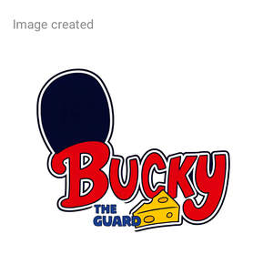

Trade Mark Journal No.2025/045 7 November 2025
UK00004281727 22 October 2025 (16,25,28,41)

- Class 16
- Book covers; Book binders; Book bindings; Book jackets; Cheque book covers; Book marks; Check book covers; Book ends; Book wrappings; Story books; Book markers; Manuscript books; Non-fiction books; Series of non-fiction books; Leather appointment book covers; Books; Copy books; Comic books; Book binding material; Writing books; Guide books; Paper book markers; Recipe books; Cheque book cases; Book binding materials; Check book holders; Check book cases; Song books; Sketch books; Series of fiction books; Picture books; Cheque book holders; Fiction books; Poster books; Covers for books; Printed books; Coloring books; Gift books; Note books; Writing or drawing books; Resource books; Flip books; Travel guide books; Birthday books; Information books; School writing books; Jackets of paper for books; Colouring books; Painting books; Travel books; Check books; Cheque books; Drawing books; Sticker books; Blank journal books; Wedding books; Fantasy books; Pop-up books; Coupon books; Date books; Pocket memorandum books; Commemorative books; Composition books; Scrap books; Printed music books; Paper for wrapping books; Agenda books; Bill books; Cook books; Index books; Dictation books; Telephone books; Music note books; Ledger books; Series of computer game hint books; Baby books; Baby books [storybooks].
- Class 25
- Clothing; Knitwear [clothing]; Jackets [clothing]; Ready-to-wear clothing; Woolen clothing; Furs [clothing]; Layettes [clothing]; Clothing layettes; Garments for protecting clothing; Linen clothing; Headbands [clothing]; Headbands for clothing; Gloves [clothing]; Gloves as clothing; Clothes; Aprons [clothing]; Maternity clothing; Jerseys [clothing]; Kerchiefs [clothing]; Denims [clothing]; Shorts [clothing]; Cashmere clothing; Capes (clothing); Oilskins [clothing]; Gabardines [clothing]; Leather clothing; Clothing of leather; Leather (Clothing of -); Silk clothing; Parts of clothing, footwear and headgear; Collars [clothing]; Knitted clothing; Veils [clothing]; Hoods [clothing]; Windproof clothing; Embroidered clothing; Corsets [clothing, foundation garments]; Wristbands [clothing]; Bandeaux [clothing]; Belts [clothing]; Belts for clothing; Rainproof clothing; Waterproof clothing; Casual clothing; Visors [clothing]; Jackets being sports clothing; Jackets (Stuff -) [clothing]; Stuff jackets [clothing]; Playsuits [clothing]; Bottoms [clothing]; Ready-made clothing; Clothing for leisure wear; Infant clothing; Trunks being clothing; Latex clothing; Woven clothing; Leisure clothing; Ties [clothing]; Clothing for sports; Clothing for children; Bodies [clothing]; Clothing for babies; Clothing for infants; Clothing for cycling; Water-resistant clothing; Weatherproof clothing.
- Class 28
- Toys; Toys, games, and playthings; Toys and playthings for pets; Ride-on toys; Cuddly toys; Puzzles [toys]; Toys for sandpits; Stuffed toys; Plush toys; Inflatable toys; Noisemakers [toys]; Toys for babies; Toys for pets; Fidget toys; Wind-up toys; Toys for use in perambulators; Plastic toys; Radio-controlled toys; Scooters [toys]; Crib toys; Toys for animals; Mobiles [toys]; Toys, games and playthings for pet animals; Pet toys; Windup toys; Rattles [toys]; Toys for cats; Toys for infants; Model cars [toys or playthings]; Wooden toys; Toys and playthings for pet animals; Toys for dogs; Toy dolls; Educational toys; Outdoor toys; Bendable toys; Toy playsets; Bath toys; Models being toys; Infant toys; Dog toys; Sandbox toys; Bathtub toys; Electronic toys; Action figures [toys or playthings]; Whistles [toys]; Sand toys; Inflatable ride-on toys; Controllers for toys; Bouncing toys; Miniature car models [toys or playthings]; Soft toys; Drones [toys]; Cloth toys; Musical toys; Tricycles for infants [toys]; Toy figurines; Toy furniture; Toys for birds; Play mats for use with toy vehicles [playthings]; Mechanical toys; Wheeled toys; Clockwork toys; Developmental toys; Plastic toys for use in the bath; Crib mobiles [toys]; Fluffy toys; Stuffed animals [toys]; Inflatable bath toys; Rocking toys; Stacking toys; Fabric toys; Plastic models being toys; Water toys; Modular toys; Model toys; Whack-a-mole toys for pets; Play mats incorporating infant toys [playthings]; Drawing toys; Action toys; Toy prams; Stuffed and plush toys; Stuffed plush toys; Plush stuffed toys; Battery-operated action toys; Sketching toys; Children's toys; Toy bicycles; Squeezable squeaking toys; Plastic character toys; Whistling toys; Smart toys; Toy tableware; Construction toys; Clockwork toys [of plastics]; Push toys; Articles of clothing for toys; Toy wheelbarrows; Squeeze toys; Talking toys; Toy bakeware and toy cookware; Bendy balls being toys; Toy xylophones; Toy mobiles; Stuffed bean-filled toys; Toy animals; Pull toys; Clothing for toy figures; Chewing toys for parrots; Toy cars; Water-squirting toys; Toy strollers; Toys for pet animals; Toy balloons; Assembly toys; Toy scooters; Toy hats; Intelligent toys; Punching toys; Music box toys; Toy cookware; Toy automobiles; Toy harmonicas; Toy robots; Smart plush toys; Toy tools; Toys in the form of puzzles; Xylophones being musical toys; Toy weapons; Novelty toys for parties; Toy glockenspiels; Soft sculpture toys; Inflatable pool toys; Costumes being childrens playthings; Toy balls; Toy airplanes; Toy pushchairs; Toy vehicles; Toy bakeware; Puzzle mats [toys]; Money guns being toys; Playthings.
- Class 41
- Book publishing; Book and review publishing; Book rental; Book loaning; Book lending; Publication of books; Books (Publication of -); Electronic book reader rental; Publication of text books; Rental of electronic book readers; Publication of books, reviews; Publication of lyrics of songs in book form; Publishing of books; Publishing of books and reviews; Publication of audio books; Publication of year books; Publication of music books; Services for the publication of guide books; Publication of educational books; Publishing of instructional books; Rental of books; Book club services providing information relating to books; Services for the publication of books; Providing online non-downloadable comic books and graphic novels; Publishing of books, magazines; Online publication of electronic books and journals; Publication of electronic books and journals online; Providing online comic books, not downloadable; Multimedia publishing of books.
Luciana Luppe Da Silva